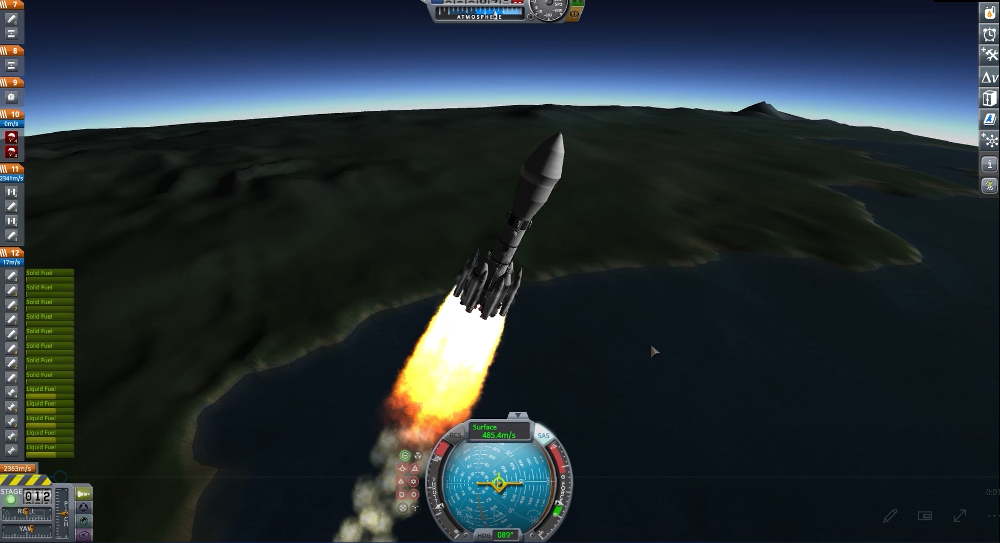
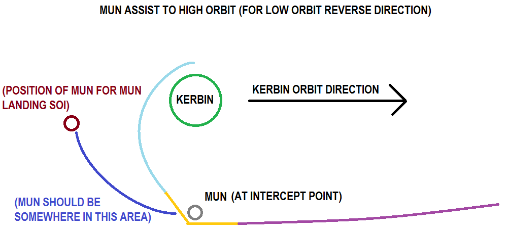
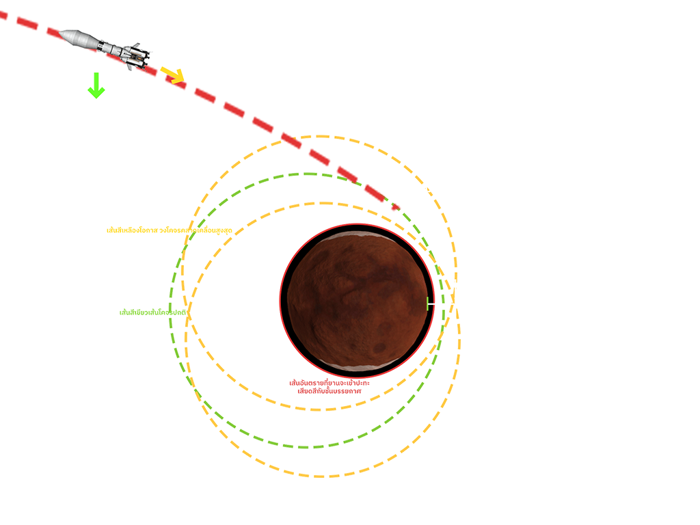
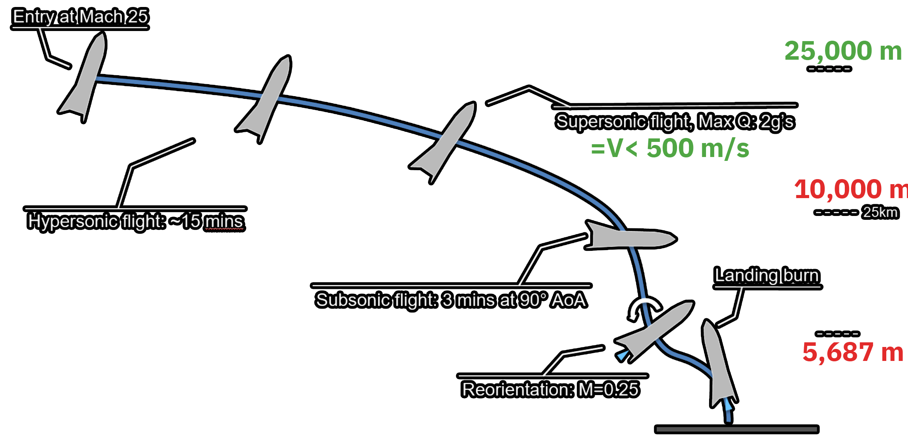

ลำดับการเดินทาง
-
01
การเดินทางออกจากโลก

การออกจากโลกจำเป็นต้องใช้เชื้อเพลิงปริมาณมหาศาล เนื่องจากต้องปะทะกับแรงต้านอากาศที่จุด Max -q

-
ใช้แรงเหวี่ยงดวงจันทร์บริวาร
-
ใช้แรงเหวี่ยงดวงอาทิตย์ไปดาวดูน่า
-
ลดความเร็วเข้าสู่วงโคจร

-
02
เริ่มแผนการสำรวจดาว Duna
-
ปลดดาวเทียมเพื่อศึกษาที่ลงจอด และเพื่อทราบทรัพยากรใต้ธรณี เนื่องจาก KHAOS EAGLE สามารถเปลี่ยนตำแหน่งได้ด้วยตนเองจึงสามารถสำรวจทรัพยากรได้แทบทุกตารางกิโลเมตร
-
สร้างเครือข่าย Deep Space Network หรือ DSN
-
เมื่อถึงตำแหน่งแล้ว ทำการปลด KHAOS MICKEY ลงจอดตามเป้าหมาย
-
เมื่อปลด KHAOS EAGLE และ MICKEY แล้วจะนำ KHAOS SEEKER ลงจอด เพื่อเติมเชื้อเพลิง ซึ่งจะใช้เป็นเสาสัญญาณ DSN และสามารถใช้เป็นยานอพยพภายหลังได้

-
ขุดเจาะทรัพยากรใต้ธรณีเพื่อนำมาแปลงเป็นเชื้อเพลิงได้แก่ Oxidizer, Liquid fuel และ Monopropellant

-
ในระหว่างนี้ KHAOS SEEKER จะทำหน้าที่เป็นเสาสัญญาณ DSN ชั่วคราว ซึ่งในอนาคตสามารถนำมาใช้เป็นยานขนส่งของหรือยานอพยพได้